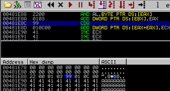

Header cookies
Freelist header cookies: The introduction of Windows XP SP2 saw a random heap cookie placed inside the chunk headers at offset 0x5. Only the freelist chunks have these cookie checks. Below is an image of a heap chunk with the security cookie highlighted. This is a random single byte entry and as such has a maximum possible randomization of 256 possible values. Keep in mind that you might be able to bruteforce this value in a multi threaded environment.
